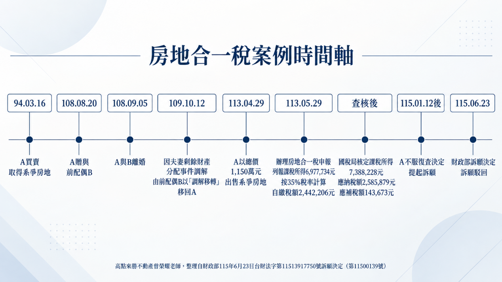
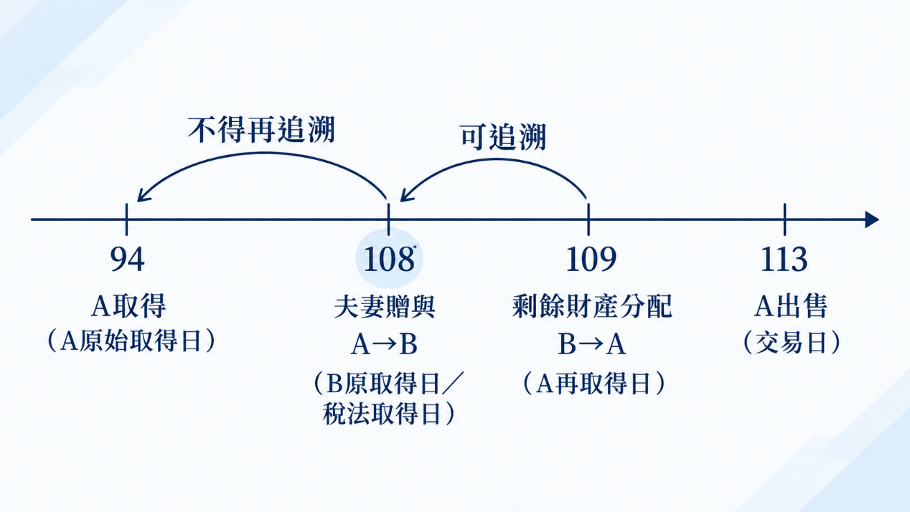

主題精選：剩餘財產¶
共收錄 4 篇文章。
1. 房子持有近20年，為何房地合一稅仍課35%？—夫妻贈與與剩餘財產分配的取得日認定¶
發布日期: 2026-10-06
內文¶
各位同學好
本週專欄整理一個房地合一所得稅的訴願案，其涉及夫妻贈與+剩餘財產差額分配之取得日認定觀念，非常值得瞭解及釐清觀念，茲整理如下：
• (一) 主要爭點 A於94年買入→ A於108年贈與配偶B → A、B離婚 → B於109因剩餘財產分配將房地移轉回A → A於113年出售。
[圖片1]
就外觀而言，自A於94年取得，至A113年出售，持有近20年，故A主張：
-
系爭房地原係A於94年買賣取得，雖經贈與B後再因剩餘財產差額分配移回A，仍應以A於94年原始取得日為取得日，適用舊制房屋交易損益規定。
-
縱使無舊制適用，也應以夫妻持有系爭房地期間合併計算，而適用新制持有10年以上的15%稅率。
• (二) 重要規定 首先，要先注意兩個規定：
-
財政部106年3月2日台財稅字第10504632520號令：「個人取得配偶贈與之房屋、土地，適用遺產及贈與稅法第20條第1項第6款配偶相互贈與之財產不計入贈與總額規定者，出售時應以配偶間第1次相互贈與前配偶原始取得該房屋、土地之日為取得日，據以計算持有期間及認定應適用所得稅法第14條第1項第7類規定計算房屋之財產交易損益(以下簡稱舊制房屋交易損益)或依同法第14條之4規定計算個人房屋、土地交易所得或損失(以下簡稱新制房屋土地交易損益)，並按該房屋、土地原始取得之原因，分別依所得稅法相關規定課徵所得稅。」
-
房地合一稅申報作業要點（以下簡稱申報要點）第4點第13款有關房屋、土地取得日之認定：「配偶之一方依民法第1030條之1規定行使剩餘財產差額分配請求權取得之房屋、土地、房屋使用權、預售房地、股份或出資額，為配偶之他方原取得之日。」
• (三) 訴願決定理由 按民法第406條規定，贈與係基於當事人雙方合意，一方以自己之財產無償給與他方，他方允受之契約；同法第1030條之1規範之夫妻剩餘財產分配請求權，乃夫妻婚姻關係消滅時，由財產少的一方對多的一方請求分配差額，係為債權的行使。由此觀之，前者為契約行為，後者屬單獨行為。復按同法第1018條規定，夫或妻各自管理、使用、收益及處分其財產，且我國夫妻財產制係採分別財產制為基礎之「法定財產制」，並無將夫妻財產逕視為同一經濟實體之法律基礎(最高行政法院104年度判字第129號判決參照)。所訴夫妻為同一經濟實體，應以訴願人原始取得系爭房地之日為取得日，適用舊制房屋交易損益一節，容難採據。
• (四) 曾老師整理說明 首先，本案財政部區分「因配偶贈與取得」與「因剩餘財產差額分配取得」二種取得原因。 其次，倘若94年A買入房地，108年A贈與配偶B，而B嗣後直接出售，在符合遺產及贈與稅法第20條第1項第6款規定之前提下，依財政部106年令，其取得日得回溯至夫妻第一次相互贈與前A於94年的原始取得日，因此就新舊制判斷而言，原則上適用舊制房屋交易損益規定。 然而，此案是B並未出售，而是於109年又因剩餘財產分配移轉回給A，由A再次取得，並由A於113年出售，因而A出售時的取得日，係屬剩餘財產差額分配，故依據前述申報要點規定，係以配偶他方B的原取得日，也就是A於108年贈與給B時。 同時，本案A係因夫妻剩餘財產分配取得系爭房地，與106年令所規範之「因配偶贈與取得」要件不同，故不得再援引106年令，將取得日從108年第二次向前回溯至A於94年的原始取得日。
[圖片2]
• (五) 結果 依申報要點認定，A之稅法上取得日為108年8月20日，至113年4月29日出售時，稅法上持有期間超過2年、未逾5年，故適用35%稅率。
文章圖片¶


注：本文圖片存放於 ./images/ 目錄下
2. 113年憲判字第11號有關遺贈稅法尚未修法前之因應方式¶
發布日期: 2025-04-08
內文¶
首先，憲判字11號簡要來說有兩個違憲法條：
• 一、遺產及贈與稅法第15條第1項第1款規定：「被繼承人死亡前2年內贈與下列個人之財產，應於被繼承人死亡時，視為被繼承人之遺產，併入其遺產總額，依本法規定徵稅：一、被繼承人之配偶。……」
• (一) 違反憲法第7條平等權之意旨
死亡前2年內贈與配偶之財產，立法目的係為避免生前分散財產減少遺產稅課徵，而將其「視為遺產」，但其他繼承人未享有該財產增益，卻要代被繼承人之配偶負擔該部分遺產稅，有違量能課稅原則。亦即，遺產總額擴及繼承人實際繼承遺產以外的財產，而無法對應繼承人稅捐負擔能力。
舉例而言，我只拿到遺產2千萬，卻要負擔2千萬以外，不歸於己而是由被繼承人配偶拿走的財產，所計算的遺產稅。
• (二) 違反憲法第15條財產權保障之意旨
-
其他繼承人須以自己繼承之財產，為非自身財產增益部分，負擔稅捐債務。（以自己應得財產，負擔別人稅捐，因而侵蝕到自身財產權）
-
未對應設定上限，可能使其他繼承人因課徵遺產稅，而經濟價值嚴重減損，乃至完全失去其本得繼承之遺產，屬「絞殺性租稅」，而與比例原則有違，侵害人民財產權。。（甚至可能遺產全部被遺產稅侵蝕殆盡）
舉例而言，我只拿到遺產2千萬，卻要負擔5千萬的遺產稅。
• 二、遺產及贈與稅法第17條之1規定：「被繼承人之配偶依民法第一千零三十條之一規定主張配偶剩餘財產差額分配請求權者，納稅義務人得向稽徵機關申報自遺產總額中扣除。」同時，
違反憲法第7條平等權之意旨：
剩餘財產差額分配請求權之立法目的，係針對婚姻關係中經濟弱勢一方，其對於婚姻之家務、教養子女及共同生活等貢獻給予公平之評價，但死亡前2年內贈與配偶之財產被定性為遺產，但卻無法如同遺產稅中扣除額予以統一處理，以致於擬制財產部分無法一致且充分地反映生存配偶的潛在經濟貢獻。
簡言之，就是一般遺產有剩餘財產差額分配的扣除額，亦即有考慮生存配偶因共同家計所生經濟貢獻；但擬制遺產卻沒有，等同於沒考慮配偶經濟貢獻，兩者並未統一處理。
舉例如下，死亡前2年內贈與配偶的話，反而因未於遺產總額進行剩財扣除考量，導致反而繳的遺產稅比較多。
• (1) 甲（原4000萬）死前2年「後」贈與（2000萬）給配偶（原有財產1000萬） 剩財請求＝(2000-1000)/2＝500 遺產稅＝(2000-553-138-500-1333)*10%＝0
• (2) 甲（原4000萬）死前2年「內」贈與（2000萬）給配偶（原有財產1000萬） 剩財請求＝(2000-1000)/2＝500 遺產稅＝(2000+2000-553-138-500-1333)*10%＝147.6
按113年憲判11號，立法機關應於本判決公告之日起2年內，依本判決意旨檢討修正相關規定，於修法完成前，相關機關應依本判決意旨辦理。惟於修法完成前：
• (一) 對於「繼承人不公平負擔問題」之因應方式
-
受贈配偶同屬遺產稅納稅義務人 相關機關應計算擬制為遺產之財產占遺產總額比例，依該比例計算因該受贈財產所增加之稅額，就該部分稅額，僅得向配偶發單課徵。
-
受贈配偶因拋棄繼承或喪失繼承權等而非遺產稅納稅義務人 就視為遺產之贈與，所增加之遺產稅負，不得以繼承人為該部分遺產稅負之納稅義務人，亦不得以被繼承人死亡時遺留之財產為執行標的。
• (二) 對於「遺產總額未一致考量配偶剩財扣除問題」之因應方式 相關機關於計算配偶剩餘財產差額分配請求權之扣除數額時，就視為遺產之贈與，應將該財產視為被繼承人現存財產，並依據民法第1030條之1規範意旨，例如該財產是否為婚後財產，有無但書各款情事等，計算在遺贈稅法上得扣除之剩餘財產差額分配數額，不受被繼承人配偶實際上得依民法第1030條之1規定請求之範圍限制。
亦即如同前例，應將擬制遺產視為被繼承人現存財產，故其剩財請求＝(2000+2000-1000)/2＝1500，其遺產稅＝(2000+2000-553-138-1500-1333)*10%＝47.6
注：本文圖片存放於 ./images/ 目錄下
3. 死亡前二年贈與給配偶及剩餘財產差額分配之差異¶
發布日期: 2023-05-09
內文¶
假設甲夫原本財產4,000萬，僅有唯一繼承人妻乙（原有財產1,000萬），試問如果於死亡前先贈與2,000萬給妻乙，降低遺產額度，會否比較節稅？
首先，先複習相關法條：
• (1) 被繼承人死亡前二年內贈與下列個人之財產，應於被繼承人死亡時，視為被繼承人之遺產，併入其遺產總額，依本法規定徵稅：一、被繼承人之配偶。二、被繼承人依民法第一千一百三十八條及第一千一百四十條規定之各順序繼承人。三、前款各順序繼承人之配偶。（遺贈15）
• (2) 被繼承人之配偶依民法第一千零三十條之一規定主張配偶剩餘財產差額分配請求權者，納稅義務人得向稽徵機關申報自遺產總額中扣除。（遺贈17-1）
• (3) 法定財產制關係消滅時，夫或妻現存之婚後財產，扣除婚姻關係存續所負債務後，如有剩餘，其雙方剩餘財產之差額，應平均分配。但下列財產不在此限：一、因繼承或其他無償取得之財產。二、慰撫金。（民1030-1）
• (一) 於死亡前二年先贈與2,000萬給妻乙
-
土地增值稅：配偶相互贈與之土地，得申請不課徵土地增值稅。（土稅28-2）
-
贈與稅：配偶相互贈與之財產，不計入贈與總額（遺贈20）
-
遺產稅：
-
遺產總額 死亡前二年贈與的2,000萬仍應計入遺產總額，加上甲死亡時遺留的2,000萬，故遺產總額為4,000萬。
-
夫妻剩餘財產差額分配請求扣除額 乙於甲死亡時，財產共1,000萬＋2,000萬＝3,000萬，但依規定2,000萬屬無償取得財產，故不得列入剩餘財產中計算請求權金額。故乙剩餘財產差額分配請求金額＝（甲剩餘財產2,000萬－乙剩餘財產1,000萬）÷2＝500萬
-
遺產稅額 遺產稅＝遺產總額4,000萬－扣除額（妻493萬、喪葬費123萬、夫妻剩餘財產差額請求扣除額500萬）－免除額（1333萬）後，乘上10％稅率＝155.1萬元
• (二) 於死亡前二年以上先贈與2,000萬給妻乙
-
土地增值稅：配偶相互贈與之土地，得申請不課徵土地增值稅。（土稅28-2）
-
贈與稅：配偶相互贈與之財產，不計入贈與總額（遺贈20）
-
遺產稅：
-
遺產總額 前二年以上之贈與不需計入遺產總額，故甲死亡時遺產總額為2,000萬。
-
夫妻剩餘財產差額分配請求扣除額 乙於甲死亡時，財產共1,000萬＋2,000萬＝3,000萬，但依規定2,000萬屬無償取得財產，故不得列入剩餘財產中計算請求權金額。故乙剩餘財產差額分配請求金額＝（甲剩餘財產2,000萬－乙剩餘財產1,000萬）÷2＝500萬
-
遺產稅額 遺產稅＝遺產總額2,000萬－扣除額（妻493萬、喪葬費123萬、夫妻剩餘財產差額請求扣除額500萬）－免除額（1333萬）後，乘上10％稅率＝0元
• (三) 死亡前無贈與，全部留為遺產
-
土地增值稅：因繼承而移轉之土地，免徵土地增值稅。（土稅28）
-
贈與稅：非屬贈與稅課徵範圍。
-
遺產稅：
-
遺產總額 甲死亡時遺產總額為4,000萬。
-
夫妻剩餘財產差額分配請求扣除額 乙剩餘財產差額分配請求金額＝（甲剩餘財產4,000萬－乙剩餘財產1,000萬）÷2＝1,500萬
3. 遺產稅額 遺產稅＝遺產總額4,000萬元－扣除額（妻493萬、喪葬費123萬、夫妻剩餘財產差額請求扣除額1,500萬）－免除額（1333萬）後，乘上10％稅率＝55.1萬元¶
注：本文圖片存放於 ./images/ 目錄下
4. 夫妻剩餘財產差額分配之相關稅負¶
發布日期: 2023-05-02
內文¶
依據民法第1030條之1，法定財產制關係消滅時，夫或妻現存之婚後財產，扣除婚姻關係存續所負債務後，如有剩餘，其雙方剩餘財產之差額，應平均分配。但下列財產不在此限：
• 一、因繼承或其他無償取得之財產。
• 二、慰撫金。
此為夫妻剩餘財產差額分配請求之規定，至於其涉及不動產移轉之相關稅負，茲說明如下：
• (一) 土地增值稅
- 一方死亡時
夫妻一方死亡，生存配偶依民法第1030條之1規定行使剩餘財產差額分配請求權，於申報土地移轉現值時，應檢附其與全體繼承人協議給付文件或法院確定判決書，並准依土地稅法第28條之2規定，申請不課徵土地增值稅（參台財稅字第09604560470號）。
• (1) 申報移轉現值 A.其於生存配偶與全體繼承人訂立協議給付文件之日起30日內申報者，以訂立協議給付文件日當期之公告土地現值為準。 B.逾訂立協議給付文件之日30日後始申報者，以受理機關收件日當期之公告土地現值為準。 C.依法院判決移轉登記者，以申報人向法院起訴日當期之公告土地現值為準。
• (2) 原地價 以應給付差額之配偶取得該土地時核計土地增值稅之現值為原地價。
- 其他原因（離婚或婚姻關係存續中將法定財產制變更為其他財產制）
申請不課徵土地增值稅，相關說明同上（參台財稅字第10700509500號令）。
• (二) 契稅
- 一方死亡時
依契稅條例第2條規定：「不動產之買賣、承典、交換、贈與、分割或因占有而取得所有權者，均應申報繳納契稅。」有關配偶一方依法行使剩餘財產差額分配請求權而取得不動產所有權，非上開條文所定應申報繳納契稅之範圍，應免予報繳契稅。
- 其他原因
同上
• (三) 房地合一稅
- 一方死亡時
非所得稅課徵範圍，惟應注意，涉及房地合一所得稅之「非出價取得」。依據房地合一稅申報作業要點第四點：「配偶之一方依民法第一千零三十條之一規定行使剩餘財產差額分配請求權取得之房屋、土地，為配偶之他方原取得該房屋、土地之日。」
- 其他原因
同上。
• (四) 贈與稅
- 一方死亡時
非屬贈與稅課徵範圍。
- 其他原因
同上。
• (五) 遺產稅
- 一方死亡時
被繼承人之配偶依民法第一千零三十條之一規定主張配偶剩餘財產差額分配請求權者，納稅義務人得向稽徵機關申報自遺產總額中扣除。納稅義務人未於稽徵機關核發稅款繳清證明書或免稅證明書之日起一年內，給付該請求權金額之財產予被繼承人之配偶者，稽徵機關應於前述期間屆滿之翌日起五年內，就未給付部分追繳應納稅賦。(遺贈17-1) 換言之，屬遺產稅之扣除額。
- 其他原因
離婚或財產制變更，無涉遺產稅。¶
注：本文圖片存放於 ./images/ 目錄下